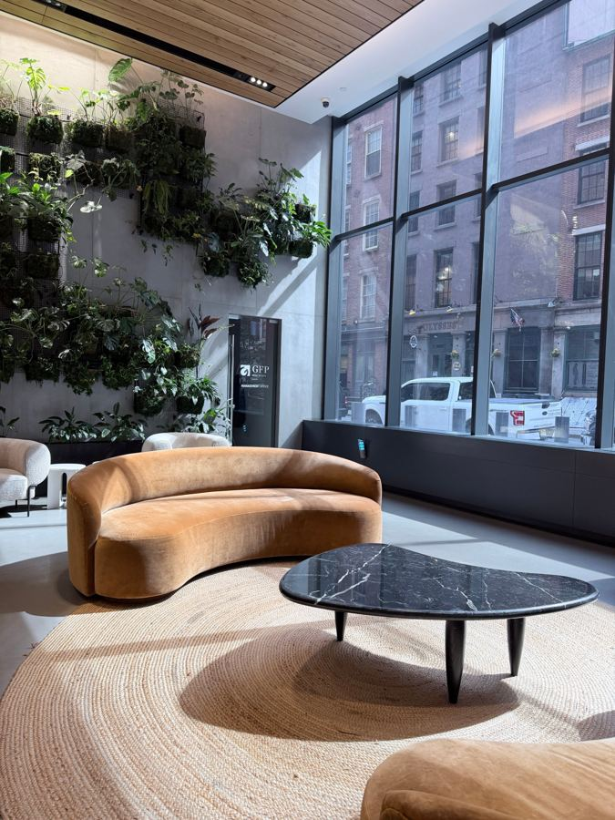
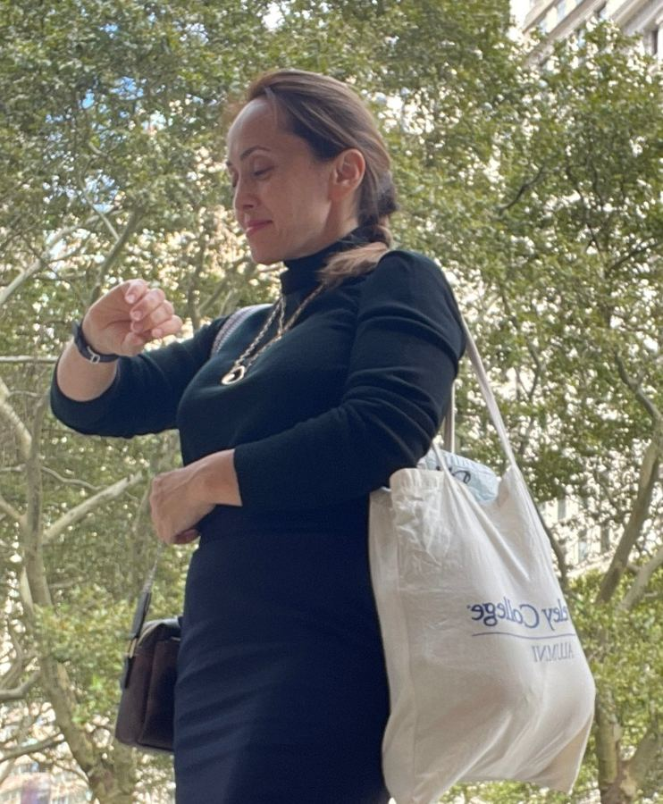
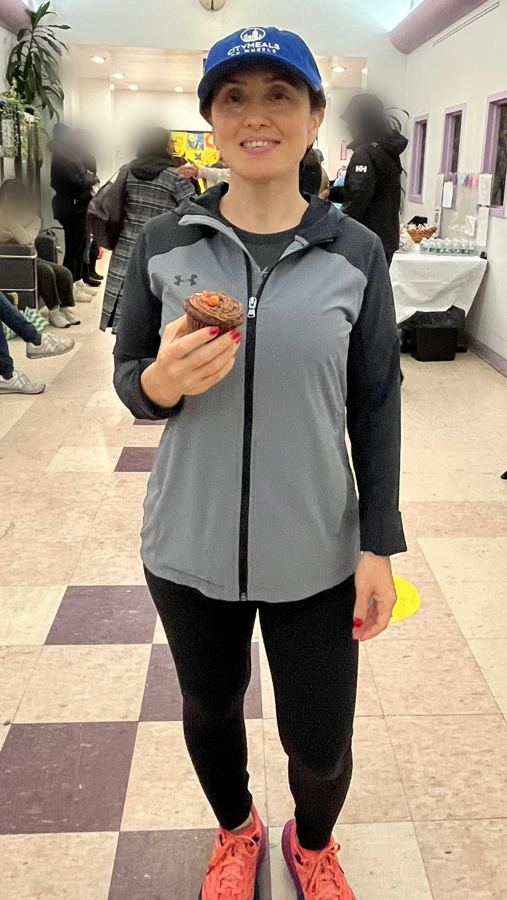
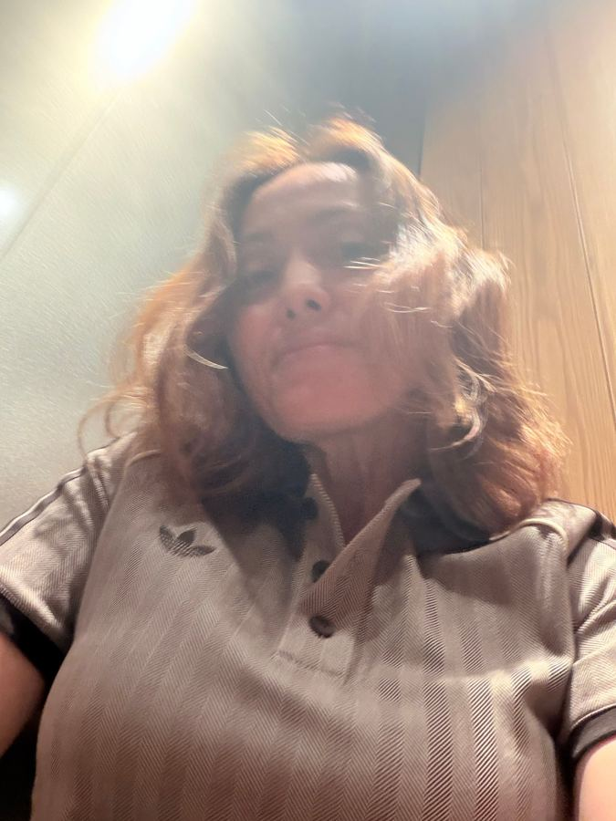
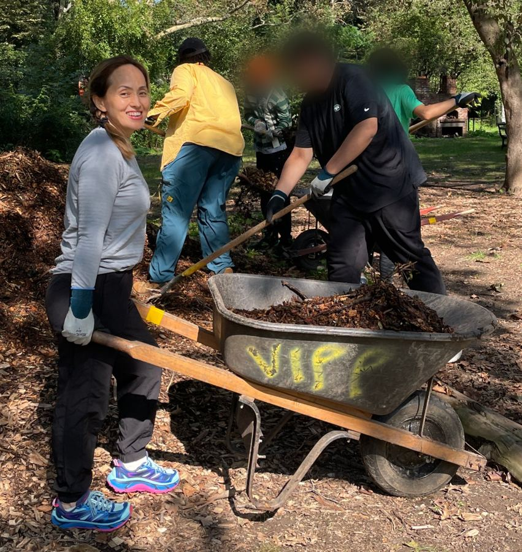
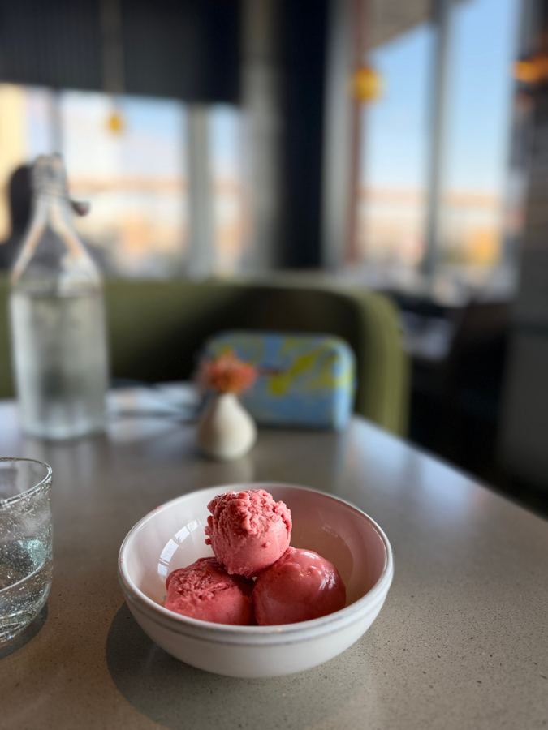

life · New York · notes
When I look back and realize it’s been 11 years of life in New York, I feel a huge wave of warmth and respect for myself ✨
Moving here as an adult, already fully formed as a person, and rebuilding your life in this wild city is a task with an asterisk 🌟 Especially when you’re an immigrant, a woman, a mother and a professional all at once, looking for your place in a new culture and a new corporate world 🏙️

somewhere in New York
Good work and growth here always come packaged with serious challenges. But over the years I learned the main thing: meet them calmly 🧘♀️ Here’s what helped me, and still does.

Bowling Green, no rush
Don’t rush under the pressure of “success by 40.” Pause. Watch, learn, absorb the city’s rhythm and its unwritten rules.
Watch people. How they speak, how they carry themselves, how they solve problems, how they treat those who can give them nothing. Everyone has something to teach you: the ones you admire, and the ones you’d never want to become.

Citymeals on Wheels
You are neither worse nor better than anyone, not the locals, not people from other waves of immigration. We are all just people with our own stories, looking for our way.
The moment you start comparing yourself, you lose yourself. Someone else’s path is not the measure of yours. I understood this once again when I started writing my book: better not to read how others write, just start your own. Everything will come out of you, even if it’s awkward, even if it’s clumsy. But it’s yours ✍️

me, as I am
Your authenticity, your background and your experience are your strength. Don’t break yourself to fit someone else’s standards.
Sometimes “crazy” is a brilliant idea that hasn’t met its audience yet. Find your audience, don’t change your idea.
Being yourself doesn’t mean closing yourself off from local realities. Understanding how an HR manager thinks and presenting your experience in a language they understand isn’t fake. It’s respect for the context. It’s not that you’re lacking something. It’s about being heard without the barriers of bias.

volunteering, hands in the soil
AI will take over our automatic tasks, and let it. But soul, sensitivity, passion and imagination are what make us human. That’s what no one can replace. The more fakeness around us, the more precious what’s alive in us becomes. Not that I wish fakeness to be around all the time.
It’s okay to make mistakes. What matters is naming them honestly, without slipping an excuse underneath.
Always keep high standards, first of all for yourself.
I talk about these standards, the ones that helped me stand strong and find my footing, next 👇

a little celebration
P.S. I write this especially for the new generation, for teenagers and young people who are choosing their path to their dream right now 🌱💫
My standards →